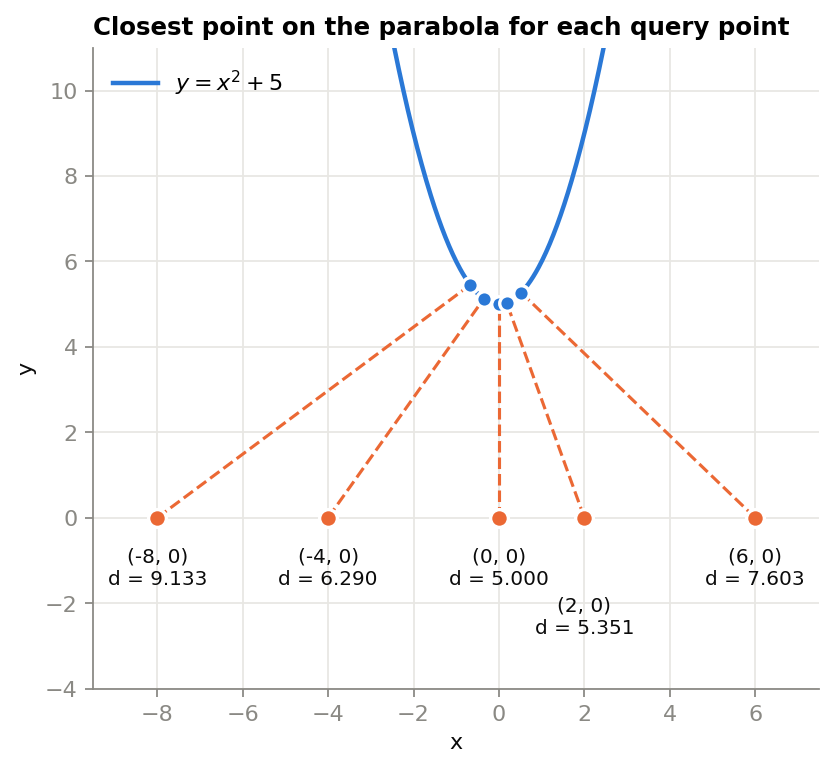
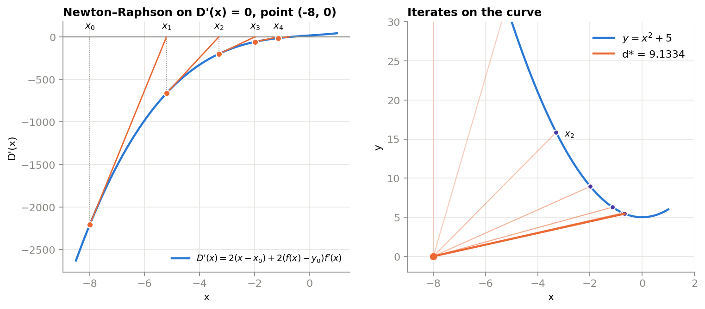
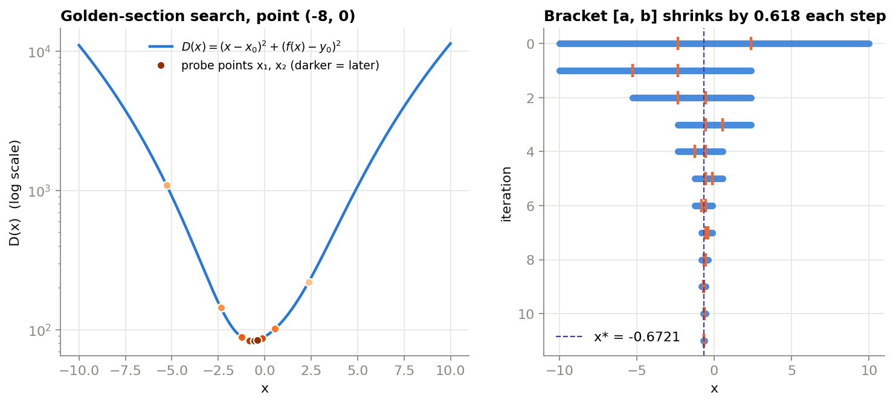
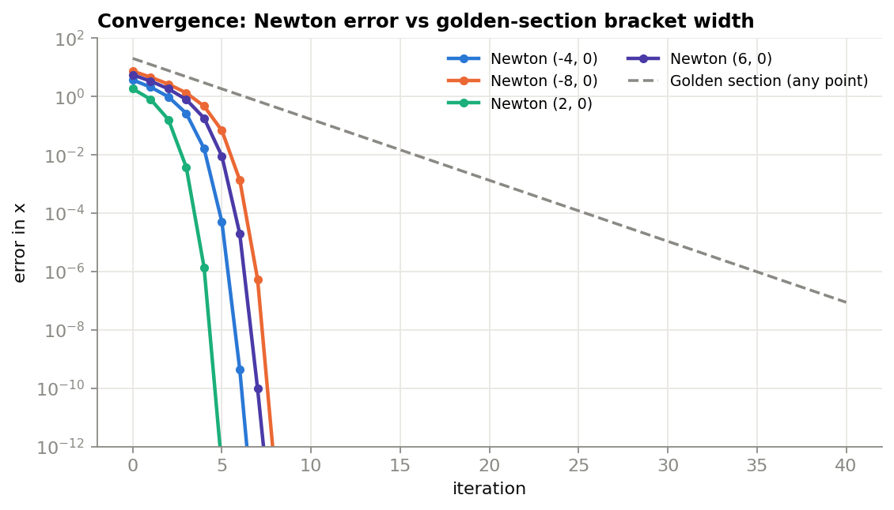
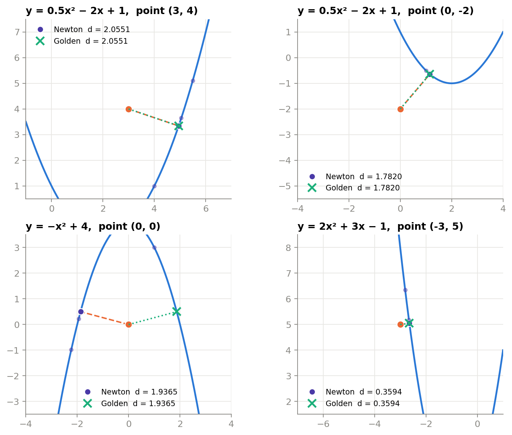
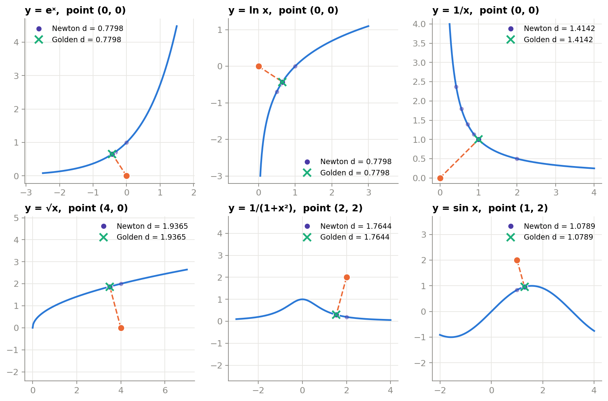
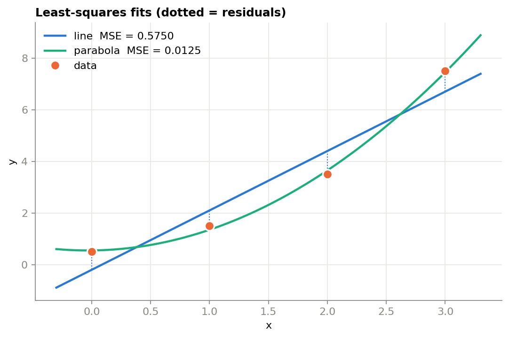
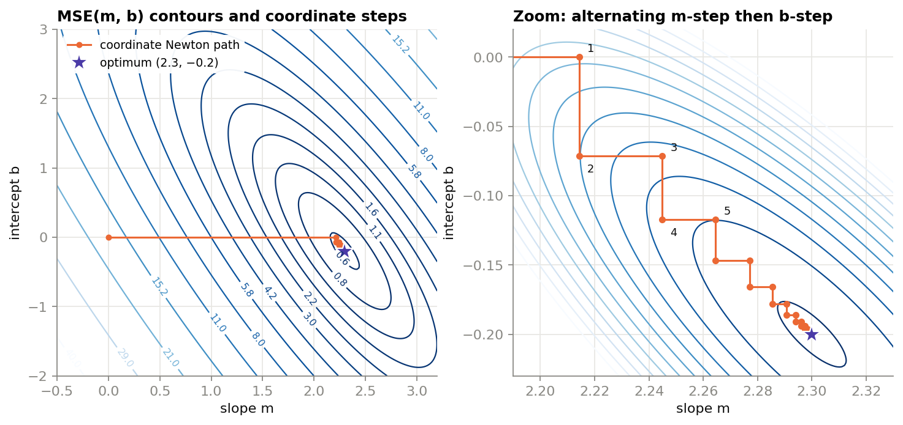
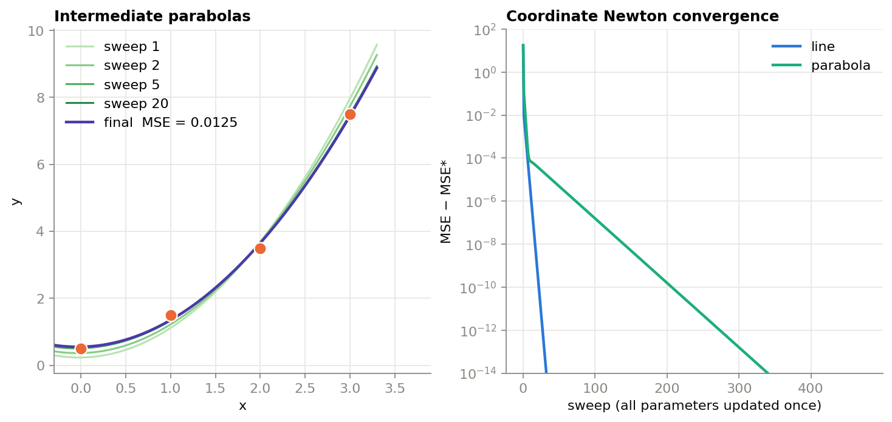

Coursework / SYDE 572, Pattern Recognition / Assignment 1
Assignment 1: Optimization
Part 1 finds the shortest distance from a point to a curve three ways: exact calculus, Newton–Raphson, and golden-section search. Part 2 fits a line and a parabola to four points by minimizing mean squared error, both in closed form and with coordinate-wise Newton–Raphson.
Answers. For \(y = x^2 + 5\) the shortest distances are 5.0000 from (0, 0), 6.2898 from (−4, 0), 9.1334 from (−8, 0), 5.3514 from (2, 0) and 7.6031 from (6, 0). The least-squares line is \(y = 2.3x - 0.2\) with MSE 0.575; the least-squares parabola is \(y = 0.75x^2 + 0.05x + 0.55\) with MSE 0.0125.
Part 1: Shortest distance from a point to a function
Objective function
The distance from a point \((x_0, y_0)\) to a point \((x, f(x))\) on the curve is
\[ d(x) = \sqrt{(x - x_0)^2 + (f(x) - y_0)^2}. \]The square root is monotonic, so the \(x\) that minimizes \(d\) also minimizes the squared distance, which is easier to differentiate:
\[ D(x) = (x - x_0)^2 + (f(x) - y_0)^2 \] \[ D'(x) = 2(x - x_0) + 2(f(x) - y_0)\,f'(x) \]Setting \(D'(x) = 0\) says the vector from the query point to the curve is perpendicular to the tangent there. For \(f(x) = x^2 + 5\) and \(y_0 = 0\) (true for every point in the assignment):
\[ D(x) = (x - x_0)^2 + (x^2 + 5)^2 \] \[ D'(x) = 4x^3 + 22x - 2x_0 \] \[ D''(x) = 12x^2 + 22 \]\(D''(x) > 0\) for every \(x\), so \(D\) is strictly convex and has exactly one minimum. That makes all three methods safe here.
Analytical solution
Setting \(D'(x) = 0\) and dividing by 4 gives a depressed cubic:
\[ x^3 + \tfrac{11}{2}x - \tfrac{x_0}{2} = 0 \] \[ x^3 + px + q = 0, \quad p = \tfrac{11}{2},\;\; q = -\tfrac{x_0}{2} \]Because \(p > 0\), the discriminant \(\tfrac{q^2}{4} + \tfrac{p^3}{27}\) is positive and there is exactly one real root, given by Cardano's formula:
\[ x^* = \sqrt[3]{-\tfrac{q}{2} + \sqrt{\tfrac{q^2}{4} + \tfrac{p^3}{27}}} + \sqrt[3]{-\tfrac{q}{2} - \sqrt{\tfrac{q^2}{4} + \tfrac{p^3}{27}}}. \]Worked example: (−4, 0)
Here \(q = 2\), so \(\tfrac{q^2}{4} = 1\) and \(\tfrac{p^3}{27} = \tfrac{166.375}{27} = 6.16204\).
\[ \sqrt{1 + 6.16204} = 2.67620 \] \[ x^* = \sqrt[3]{1.67620} + \sqrt[3]{-3.67620} = -0.35547 \] \[ f(x^*) = 5.12636 \] \[ d = \sqrt{3.64453^2 + 5.12636^2} = 6.28985 \]The other points follow the same way. At (0, 0), \(q = 0\) and the two cube roots cancel, giving \(x^* = 0\) and the vertex (0, 5) at distance 5.
| Point | \(q\) | \(x^*\) | Closest point | Distance \(d\) |
|---|---|---|---|---|
| (0, 0) | 0 | 0 | (0, 5) | 5.000000 |
| (−4, 0) | 2 | −0.355470 | (−0.3555, 5.1264) | 6.289845 |
| (−8, 0) | 4 | −0.672078 | (−0.6721, 5.4517) | 9.133420 |
| (2, 0) | −1 | 0.180745 | (0.1807, 5.0327) | 5.351396 |
| (6, 0) | −3 | 0.519904 | (0.5199, 5.2703) | 7.603125 |

Newton–Raphson by hand
Newton's method finds the root of \(D'(x)\) using the update \(x_{k+1} = x_k - D'(x_k)/D''(x_k)\). For this parabola the update simplifies to
\[ x_{k+1} = x_k - \frac{4x_k^3 + 22x_k - 2x_0}{12x_k^2 + 22} = \frac{4x_k^3 + x_0}{6x_k^2 + 11}. \]Each iteration starts from \(x_0\), the query point's own \(x\)-coordinate, and stops when \(|x_{k+1} - x_k| < 10^{-7}\). For (−4, 0):
| \(k\) | \(x_k\) | \(D'(x_k)\) | \(D''(x_k)\) | \(x_{k+1}\) |
|---|---|---|---|---|
| 0 | −4.000000 | −336.0000 | 214.0000 | −2.429907 |
| 1 | −2.429907 | −102.8469 | 92.8533 | −1.322279 |
| 2 | −1.322279 | −30.3377 | 42.9811 | −0.616439 |
| 3 | −0.616439 | −6.4986 | 26.5600 | −0.371761 |
| 4 | −0.371761 | −0.3843 | 23.6585 | −0.355519 |
| 5 | −0.355519 | −0.0012 | 23.5167 | −0.355470 |
| 6 | −0.355470 | 0.0000 | 23.5163 | −0.355470 |
Iteration 0 as an example: \(x_1 = \frac{4(-64) + (-4)}{6(16) + 11} = \frac{-260}{107} = -2.42991\). The first steps are cautious because \(D''\) is large far from the vertex; once close, the number of correct digits roughly doubles each step. The same procedure gives:
| Point | Start | Iterations | \(x^*\) | Distance \(d\) |
|---|---|---|---|---|
| (0, 0) | 0 | 1 | 0.000000 | 5.000000 |
| (−4, 0) | −4 | 7 | −0.355470 | 6.289845 |
| (−8, 0) | −8 | 9 | −0.672078 | 9.133420 |
| (2, 0) | 2 | 6 | 0.180745 | 5.351396 |
| (6, 0) | 6 | 8 | 0.519904 | 7.603125 |
Newton iterations for the other four points
(0, 0)
| \(k\) | \(x_k\) | \(D'(x_k)\) | \(D''(x_k)\) | \(x_{k+1}\) |
|---|---|---|---|---|
| 0 | 0.000000 | 0.0000 | 22.0000 | 0.000000 |
(−8, 0)
| \(k\) | \(x_k\) | \(D'(x_k)\) | \(D''(x_k)\) | \(x_{k+1}\) |
|---|---|---|---|---|
| 0 | −8.000000 | −2208.0000 | 790.0000 | −5.205063 |
| 1 | −5.205063 | −662.5879 | 347.1122 | −3.296205 |
| 2 | −3.296205 | −199.7692 | 152.3796 | −1.985209 |
| 3 | −1.985209 | −58.9698 | 69.2926 | −1.134183 |
| 4 | −1.134183 | −14.7879 | 37.4364 | −0.739168 |
| 5 | −0.739168 | −1.8771 | 28.5564 | −0.673434 |
| 6 | −0.673434 | −0.0372 | 27.4422 | −0.672079 |
| 7 | −0.672079 | 0.0000 | 27.4203 | −0.672078 |
| 8 | −0.672078 | 0.0000 | 27.4203 | −0.672078 |
(2, 0)
| \(k\) | \(x_k\) | \(D'(x_k)\) | \(D''(x_k)\) | \(x_{k+1}\) |
|---|---|---|---|---|
| 0 | 2.000000 | 72.0000 | 70.0000 | 0.971429 |
| 1 | 0.971429 | 21.0383 | 33.3241 | 0.340105 |
| 2 | 0.340105 | 3.6397 | 23.3881 | 0.184484 |
| 3 | 0.184484 | 0.0838 | 22.4084 | 0.180746 |
| 4 | 0.180746 | 0.0000 | 22.3920 | 0.180745 |
| 5 | 0.180745 | 0.0000 | 22.3920 | 0.180745 |
(6, 0)
| \(k\) | \(x_k\) | \(D'(x_k)\) | \(D''(x_k)\) | \(x_{k+1}\) |
|---|---|---|---|---|
| 0 | 6.000000 | 984.0000 | 454.0000 | 3.832599 |
| 1 | 3.832599 | 297.5026 | 198.2658 | 2.332075 |
| 2 | 2.332075 | 90.0383 | 87.2629 | 1.300270 |
| 3 | 1.300270 | 25.3994 | 42.2884 | 0.699647 |
| 4 | 0.699647 | 4.7621 | 27.8741 | 0.528801 |
| 5 | 0.528801 | 0.2251 | 25.3556 | 0.519923 |
| 6 | 0.519923 | 0.0005 | 25.2438 | 0.519904 |
| 7 | 0.519904 | 0.0000 | 25.2436 | 0.519904 |

Golden-section search by hand
Golden-section search needs only values of \(D(x)\) and an interval \([a, b]\) containing the minimum. It keeps two probe points
\[ x_1 = a + r(b - a), \qquad x_2 = b - r(b - a) \] \[ r = \tfrac{3 - \sqrt{5}}{2} \approx 0.381966 \]If \(D(x_1) < D(x_2)\) the minimum cannot lie in \((x_2, b]\), so \(b \leftarrow x_2\); otherwise \(a \leftarrow x_1\). The golden ratio makes the surviving probe land exactly where the next one is needed, so each step costs one new evaluation and shrinks the interval by 0.618. For (−4, 0) on \([-10, 10]\):
| \(k\) | \(a\) | \(b\) | \(x_1\) | \(x_2\) | \(D(x_1)\) | \(D(x_2)\) | New interval |
|---|---|---|---|---|---|---|---|
| 0 | −10.0000 | 10.0000 | −2.3607 | 2.3607 | 114.472 | 152.243 | [a, x₂] |
| 1 | −10.0000 | 2.3607 | −5.2786 | −2.3607 | 1081.680 | 114.472 | [x₁, b] |
| 2 | −5.2786 | 2.3607 | −2.3607 | −0.5573 | 114.472 | 40.054 | [x₁, b] |
| 3 | −2.3607 | 2.3607 | −0.5573 | 0.5573 | 40.054 | 48.971 | [a, x₂] |
| 4 | −2.3607 | 0.5573 | −1.2461 | −0.5573 | 50.523 | 40.054 | [x₁, b] |
| 5 | −1.2461 | 0.5573 | −0.5573 | −0.1316 | 40.054 | 40.138 | [a, x₂] |
| 6 | −1.2461 | −0.1316 | −0.8204 | −0.5573 | 42.293 | 40.054 | [x₁, b] |
After \(n\) steps the interval has width \(20 \times 0.618^n\). Reaching \(10^{-7}\) takes \(n = \ln(2 \times 10^8) / \ln(1.618) \approx 40\) steps for every point, and the midpoint of the final interval matches the analytical \(x^*\) to seven digits in all five cases:
| Point | Bracket | Iterations | Final width | \(x^*\) | Distance \(d\) |
|---|---|---|---|---|---|
| (0, 0) | [−10, 10] | 40 | \(8.7 \times 10^{-8}\) | 0.000000 | 5.000000 |
| (−4, 0) | [−10, 10] | 40 | \(8.7 \times 10^{-8}\) | −0.355470 | 6.289845 |
| (−8, 0) | [−10, 10] | 40 | \(8.7 \times 10^{-8}\) | −0.672078 | 9.133420 |
| (2, 0) | [−10, 10] | 40 | \(8.7 \times 10^{-8}\) | 0.180745 | 5.351396 |
| (6, 0) | [−10, 10] | 40 | \(8.7 \times 10^{-8}\) | 0.519904 | 7.603125 |
Golden-section iterations for the other four points (first 7 steps)
(0, 0)
| \(k\) | \(a\) | \(b\) | \(x_1\) | \(x_2\) | \(D(x_1)\) | \(D(x_2)\) | New interval |
|---|---|---|---|---|---|---|---|
| 0 | −10.0000 | 10.0000 | −2.3607 | 2.3607 | 117.357 | 117.357 | [x₁, b] |
| 1 | −2.3607 | 10.0000 | 2.3607 | 5.2786 | 117.357 | 1107.909 | [a, x₂] |
| 2 | −2.3607 | 5.2786 | 0.5573 | 2.3607 | 28.513 | 117.357 | [a, x₂] |
| 3 | −2.3607 | 2.3607 | −0.5573 | 0.5573 | 28.513 | 28.513 | [x₁, b] |
| 4 | −0.5573 | 2.3607 | 0.5573 | 1.2461 | 28.513 | 44.492 | [a, x₂] |
| 5 | −0.5573 | 1.2461 | 0.1316 | 0.5573 | 25.191 | 28.513 | [a, x₂] |
| 6 | −0.5573 | 0.5573 | −0.1316 | 0.1316 | 25.191 | 25.191 | [x₁, b] |
(−8, 0)
| \(k\) | \(a\) | \(b\) | \(x_1\) | \(x_2\) | \(D(x_1)\) | \(D(x_2)\) | New interval |
|---|---|---|---|---|---|---|---|
| 0 | −10.0000 | 10.0000 | −2.3607 | 2.3607 | 143.586 | 219.128 | [a, x₂] |
| 1 | −10.0000 | 2.3607 | −5.2786 | −2.3607 | 1087.451 | 143.586 | [x₁, b] |
| 2 | −5.2786 | 2.3607 | −2.3607 | −0.5573 | 143.586 | 83.596 | [x₁, b] |
| 3 | −2.3607 | 2.3607 | −0.5573 | 0.5573 | 83.596 | 101.429 | [a, x₂] |
| 4 | −2.3607 | 0.5573 | −1.2461 | −0.5573 | 88.554 | 83.596 | [x₁, b] |
| 5 | −1.2461 | 0.5573 | −0.5573 | −0.1316 | 83.596 | 87.086 | [a, x₂] |
| 6 | −1.2461 | −0.1316 | −0.8204 | −0.5573 | 83.730 | 83.596 | [x₁, b] |
(2, 0)
| \(k\) | \(a\) | \(b\) | \(x_1\) | \(x_2\) | \(D(x_1)\) | \(D(x_2)\) | New interval |
|---|---|---|---|---|---|---|---|
| 0 | −10.0000 | 10.0000 | −2.3607 | 2.3607 | 130.800 | 111.914 | [x₁, b] |
| 1 | −2.3607 | 10.0000 | 2.3607 | 5.2786 | 111.914 | 1090.795 | [a, x₂] |
| 2 | −2.3607 | 5.2786 | 0.5573 | 2.3607 | 30.284 | 111.914 | [a, x₂] |
| 3 | −2.3607 | 2.3607 | −0.5573 | 0.5573 | 34.742 | 30.284 | [x₁, b] |
| 4 | −0.5573 | 2.3607 | 0.5573 | 1.2461 | 30.284 | 43.508 | [a, x₂] |
| 5 | −0.5573 | 1.2461 | 0.1316 | 0.5573 | 28.664 | 30.284 | [a, x₂] |
| 6 | −0.5573 | 0.5573 | −0.1316 | 0.1316 | 29.717 | 28.664 | [x₁, b] |
(6, 0)
| \(k\) | \(a\) | \(b\) | \(x_1\) | \(x_2\) | \(D(x_1)\) | \(D(x_2)\) | New interval |
|---|---|---|---|---|---|---|---|
| 0 | −10.0000 | 10.0000 | −2.3607 | 2.3607 | 181.685 | 125.029 | [x₁, b] |
| 1 | −2.3607 | 10.0000 | 2.3607 | 5.2786 | 125.029 | 1080.566 | [a, x₂] |
| 2 | −2.3607 | 5.2786 | 0.5573 | 2.3607 | 57.825 | 125.029 | [a, x₂] |
| 3 | −2.3607 | 2.3607 | −0.5573 | 0.5573 | 71.200 | 57.825 | [x₁, b] |
| 4 | −0.5573 | 2.3607 | 0.5573 | 1.2461 | 57.825 | 65.539 | [a, x₂] |
| 5 | −0.5573 | 1.2461 | 0.1316 | 0.5573 | 59.612 | 57.825 | [x₁, b] |
| 6 | 0.1316 | 1.2461 | 0.5573 | 0.8204 | 57.825 | 59.012 | [a, x₂] |


Code
newton and golden work for any function; analytic solves the closest-point cubic for any parabola \(y = ax^2 + bx + c\). Setting \(D'(x) = 0\) for a general parabola gives
whose real roots np.roots returns; the one with the smallest distance is the answer. derivs is the only change needed for non-polynomial functions (below).
part1.py
import math
import numpy as np
def newton(x0, y0, f, df, ddf, x=0.0, tol=1e-7, max_iter=100):
path = [x]
for _ in range(max_iter):
g = 2 * (x - x0) + 2 * (f(x) - y0) * df(x)
h = 2 + 2 * df(x) ** 2 + 2 * (f(x) - y0) * ddf(x)
x_new = x - g / h
path.append(x_new)
if abs(x_new - x) < tol:
x = x_new
break
x = x_new
return math.hypot(x - x0, f(x) - y0), x, path
def golden(x0, y0, f, a, b, tol=1e-7):
r = (3 - math.sqrt(5)) / 2
D = lambda x: (x - x0) ** 2 + (f(x) - y0) ** 2
x1, x2 = a + r * (b - a), b - r * (b - a)
D1, D2 = D(x1), D(x2)
path = [(a, b, x1, x2)]
while b - a > tol:
if D1 < D2:
b, x2, D2 = x2, x1, D1
x1 = a + r * (b - a)
D1 = D(x1)
else:
a, x1, D1 = x1, x2, D2
x2 = b - r * (b - a)
D2 = D(x2)
path.append((a, b, x1, x2))
x = (a + b) / 2
return math.sqrt(D(x)), x, path
def analytic(x0, y0, a, b, c):
k = c - y0
roots = np.roots([2 * a * a, 3 * a * b, b * b + 2 * a * k + 1, b * k - x0])
xs = roots[abs(roots.imag) < 1e-9].real
d = np.hypot(xs - x0, a * xs ** 2 + b * xs + c - y0)
return d.min(), xs[d.argmin()]
def parabola(a, b, c):
f = lambda x: a * x * x + b * x + c
df = lambda x: 2 * a * x + b
ddf = lambda x: 2 * a
return f, df, ddf
def derivs(f, h=1e-4):
return (lambda x: (f(x + h) - f(x - h)) / (2 * h),
lambda x: (f(x + h) - 2 * f(x) + f(x - h)) / h ** 2)
if __name__ == "__main__":
f, df, ddf = parabola(1, 0, 5)
for x0, y0 in [(0, 0), (-4, 0), (-8, 0), (2, 0), (6, 0)]:
print((x0, y0), analytic(x0, y0, 1, 0, 5)[0],
newton(x0, y0, f, df, ddf, x=x0)[0],
golden(x0, y0, f, -10, 10)[0])
for (a, b, c), (x0, y0) in [((0.5, -2, 1), (3, 4)), ((0.5, -2, 1), (0, -2)),
((-1, 0, 4), (0, 0)), ((2, 3, -1), (-3, 5))]:
f, df, ddf = parabola(a, b, c)
print((a, b, c), (x0, y0), analytic(x0, y0, a, b, c)[0],
newton(x0, y0, f, df, ddf, x=x0 + 1)[0],
golden(x0, y0, f, x0 - 5, x0 + 5)[0])
for f, (x0, y0), guess, (a, b) in [(math.exp, (0, 0), 0.0, (-3, 3)),
(math.log, (0, 0), 1.0, (0.01, 3)),
(lambda x: 1 / x, (0, 0), 2.0, (0.1, 5)),
(math.sqrt, (4, 0), 4.0, (0, 8)),
(lambda x: 1 / (1 + x * x), (2, 2), 2.0, (-3, 5)),
(math.sin, (1, 2), 1.0, (-1, 3))]:
df, ddf = derivs(f)
print((x0, y0), newton(x0, y0, f, df, ddf, x=guess)[0], golden(x0, y0, f, a, b)[0])Download part1.py · plots.py (produces every figure on this page)
Other parabolas
The same routines, run on four other parabolas and points. Newton starts at \(x_0 + 1\); golden-section searches \([x_0 - 5, x_0 + 5]\).
| Parabola | Point | Analytical | Newton | Golden | \(x^*\) |
|---|---|---|---|---|---|
| \(0.5x^2 - 2x + 1\) | (3, 4) | 2.055050 | 2.055050 | 2.055050 | 4.945995 |
| \(0.5x^2 - 2x + 1\) | (0, −2) | 1.781989 | 1.781989 | 1.781989 | 1.152292 |
| \(-x^2 + 4\) | (0, 0) | 1.936492 | 1.936492 | 1.936492 | ±1.870829 |
| \(2x^2 + 3x - 1\) | (−3, 5) | 0.359413 | 0.359413 | 0.359413 | −2.643679 |
The downward parabola is the interesting case. Its cubic \(4x^3 - 14x = 0\) has three real roots: \(x = 0\) is a local maximum of \(D\) (distance 4, straight up to the vertex), and \(x = \pm\sqrt{3.5}\) are two equally close minima at \(d = \sqrt{3.75}\). Newton and golden-section each found a different one, both correct. Starting Newton exactly at \(x = 0\) would stall there, since \(D'(0) = 0\): Newton finds critical points, not minima, so the starting guess matters when \(D\) is not convex.

Non-polynomial functions
Golden-section search already works for any function. Newton needs \(f'\) and \(f''\), so the one modification is to pass numerical derivatives from derivs (central differences with \(h = 10^{-4}\)) instead of writing them by hand:
df, ddf = derivs(math.log)
newton(0, 0, math.log, df, ddf, x=1.0)The six test functions cover the requested cases: exponential, logarithmic, variables in the denominator (\(1/x\) and \(1/(1+x^2)\)), a radical root, plus \(\sin x\). For \(\ln x\) and \(1/x\) the golden-section bracket must stay inside the domain, so it starts at a small positive number.
| Function | Point | Newton | Golden | \(x^*\) | Exact check |
|---|---|---|---|---|---|
| \(e^x\) | (0, 0) | 0.779767 | 0.779767 | −0.426303 | \(x^* = -W(2)/2\) |
| \(\ln x\) | (0, 0) | 0.779767 | 0.779767 | 0.652919 | mirror of \(e^x\) |
| \(1/x\) | (0, 0) | 1.414214 | 1.414214 | 1.000000 | \(d = \sqrt{2}\) |
| \(\sqrt{x}\) | (4, 0) | 1.936492 | 1.936492 | 3.500000 | \(d = \sqrt{3.75}\) |
| \(1/(1 + x^2)\) | (2, 2) | 1.764422 | 1.764422 | 1.537116 | |
| \(\sin x\) | (1, 2) | 1.078871 | 1.078871 | 1.289024 |
Several of these can be checked exactly. For \(\sqrt{x}\) from (4, 0), \(D(x) = (x - 4)^2 + x\) is a plain quadratic with minimum at \(x = 3.5\). For \(1/x\) from the origin, \(D'(x) = 2x - 2/x^3 = 0\) gives \(x = 1\). For \(e^x\) from the origin, \(D'(x) = 0\) becomes \(x = -e^{2x}\), solved by the Lambert W function. And \(\ln x\) gives the same distance as \(e^x\) because the two curves are reflections across \(y = x\), and the origin lies on that line.

Part 2: Fitting a line and a parabola
The data are four points: (0, 0.5), (2, 3.5), (1, 1.5), (3, 7.5). The sums used throughout, with \(n = 4\):
\[ \textstyle\sum x = 6,\;\; \sum x^2 = 14,\;\; \sum x^3 = 36,\;\; \sum x^4 = 98 \] \[ \textstyle\sum y = 13,\;\; \sum xy = 31,\;\; \sum x^2 y = 83 \]Setting up the MSE
For the line \(\hat{y} = mx + b\) and the parabola \(\hat{y} = ax^2 + bx + c\):
\[ E(m, b) = \frac{1}{n}\sum_{i=1}^{n} (mx_i + b - y_i)^2 \] \[ E(a, b, c) = \frac{1}{n}\sum_{i=1}^{n} (ax_i^2 + bx_i + c - y_i)^2 \]Analytical solution
Line
Setting both partial derivatives to zero:
\[ \frac{\partial E}{\partial m} = \frac{2}{n}\sum x_i(mx_i + b - y_i) = 0 \;\Rightarrow\; 14m + 6b = 31 \] \[ \frac{\partial E}{\partial b} = \frac{2}{n}\sum (mx_i + b - y_i) = 0 \;\Rightarrow\; 6m + 4b = 13 \]From the second, \(b = (13 - 6m)/4\). Substituting: \(14m + 1.5(13 - 6m) = 31\), so \(5m = 11.5\), giving \(m = 2.3\) and \(b = -0.2\).
| \(x\) | \(y\) | \(\hat{y} = 2.3x - 0.2\) | \(y - \hat{y}\) | \((y - \hat{y})^2\) |
|---|---|---|---|---|
| 0 | 0.5 | −0.2 | 0.7 | 0.49 |
| 2 | 3.5 | 4.4 | −0.9 | 0.81 |
| 1 | 1.5 | 2.1 | −0.6 | 0.36 |
| 3 | 7.5 | 6.7 | 0.8 | 0.64 |
| MSE = 2.30 / 4 | 0.575 | |||
Parabola
The three normal equations are
\[ \begin{aligned} 98a + 36b + 14c &= 83 \\ 36a + 14b + 6c &= 31 \\ 14a + 6b + 4c &= 13 \end{aligned} \]From the third, \(c = (13 - 14a - 6b)/4\). Substituting into the other two gives \(15a + 5b = 11.5\) and \(49a + 15b = 37.5\). The first gives \(b = 2.3 - 3a\); then \(49a + 15(2.3 - 3a) = 37.5\), so \(4a = 3\). Therefore \(a = 0.75\), \(b = 0.05\), \(c = 0.55\).
| \(x\) | \(y\) | \(\hat{y} = 0.75x^2 + 0.05x + 0.55\) | \(y - \hat{y}\) | \((y - \hat{y})^2\) |
|---|---|---|---|---|
| 0 | 0.5 | 0.55 | −0.05 | 0.0025 |
| 2 | 3.5 | 3.65 | −0.15 | 0.0225 |
| 1 | 1.5 | 1.35 | 0.15 | 0.0225 |
| 3 | 7.5 | 7.45 | 0.05 | 0.0025 |
| MSE = 0.05 / 4 | 0.0125 | |||

Coordinate-wise Newton–Raphson
As the assignment asks, each iteration optimizes one parameter with the others held fixed, then moves to the next. For parameter \(\theta_j\) with basis function \(\phi_j\) (\(x^2\), \(x\) or 1):
\[ \theta_j \leftarrow \theta_j - \frac{\partial E / \partial \theta_j}{\partial^2 E / \partial \theta_j^2} \] \[ \frac{\partial E}{\partial \theta_j} = \frac{2}{n}\sum \phi_j(x_i)(\hat{y}_i - y_i), \qquad \frac{\partial^2 E}{\partial \theta_j^2} = \frac{2}{n}\sum \phi_j(x_i)^2 \]\(E\) is quadratic in each single parameter, so one Newton step lands exactly on the best value of that parameter given the others. For the line the updates reduce to
\[ m \leftarrow \frac{\sum xy - b\sum x}{\sum x^2} = \frac{31 - 6b}{14}, \qquad b \leftarrow \frac{\sum y - m\sum x}{n} = \frac{13 - 6m}{4}. \]Starting from \(m = b = 0\):
| Step | Update | \(m\) | \(b\) | MSE |
|---|---|---|---|---|
| 0 | start | 0 | 0 | 17.7500 |
| 1 | \(m = 31/14\) | 2.2143 | 0 | 0.5893 |
| 2 | \(b = (13 - 6 \cdot 2.2143)/4\) | 2.2143 | −0.0714 | 0.5842 |
| 3 | \(m = (31 + 6 \cdot 0.0714)/14\) | 2.2449 | −0.0714 | 0.5809 |
| 4 | \(b = (13 - 6 \cdot 2.2449)/4\) | 2.2449 | −0.1173 | 0.5788 |
| 5 | \(m\) | 2.2646 | −0.1173 | 0.5774 |
| 6 | \(b\) | 2.2646 | −0.1469 | 0.5766 |
| 96 | converged | 2.3000 | −0.2000 | 0.5750 |
Substituting one update into the other shows why it converges: \(m_{k+1} - 2.3 = \tfrac{9}{14}(m_k - 2.3)\). The error shrinks by a factor of 0.643 per sweep, reaching the tolerance of \(10^{-10}\) after 48 sweeps (96 single-parameter steps).

The parabola cycles through \(a\), \(b\), \(c\) the same way. The first sweep from zero:
\[ \begin{aligned} a &= \tfrac{83}{98} = 0.8469 \\ b &= \tfrac{31 - 0.8469 \cdot 36}{14} = 0.0364 \\ c &= \tfrac{13 - 0.8469 \cdot 14 - 0.0364 \cdot 6}{4} = 0.2310 \end{aligned} \]| Sweep | \(a\) | \(b\) | \(c\) | MSE |
|---|---|---|---|---|
| 0 | 0 | 0 | 0 | 17.7500 |
| 1 | 0.8469 | 0.0364 | 0.2310 | 0.1180 |
| 2 | 0.8005 | 0.0567 | 0.3630 | 0.0464 |
| 3 | 0.7742 | 0.0678 | 0.4385 | 0.0233 |
| 5 | 0.7511 | 0.0765 | 0.5064 | 0.0136 |
| 10 | 0.7419 | 0.0765 | 0.5387 | 0.0126 |
| 50 | 0.7478 | 0.0567 | 0.5476 | 0.0125 |
| 476 | 0.7500 | 0.0500 | 0.5500 | 0.0125 |
This first sweep already drops the MSE from 17.75 to 0.118. It converges to \(a = 0.75,\ b = 0.05,\ c = 0.55\) with MSE 0.0125, but much more slowly (476 sweeps): the columns \(x^2\) and \(x\) have correlation 0.96 on these four points, so changing one parameter is largely undone by the next, and the error only shrinks by 3.4% per sweep.

For comparison, a single full multivariate Newton step \(\theta \leftarrow \theta - H^{-1}\nabla E\), with the constant Hessian \(H = \tfrac{2}{n}X^\top X\), reaches the exact solution in one iteration from any start, since \(E\) is quadratic. That step is the normal equations above. full_newton in the code confirms it.
Part 2 answer. Line \(y = 2.3x - 0.2\), MSE = 0.575. Parabola \(y = 0.75x^2 + 0.05x + 0.55\), MSE = 0.0125. The analytical and numerical methods agree to 6 decimal places.
Code
part2.py
import numpy as np
x = np.array([0, 2, 1, 3.0])
y = np.array([0.5, 3.5, 1.5, 7.5])
def design(x, degree):
return np.vstack([x ** k for k in range(degree, -1, -1)]).T
def mse(X, p):
return np.mean((X @ p - y) ** 2)
def analytic(degree):
X = design(x, degree)
p = np.linalg.solve(X.T @ X, X.T @ y)
return p, mse(X, p)
def newton(degree, tol=1e-10, max_sweeps=500):
X = design(x, degree)
n = len(y)
p = np.zeros(degree + 1)
path = [p.copy()]
for _ in range(max_sweeps):
old = p.copy()
for j in range(len(p)):
g = 2 / n * X[:, j] @ (X @ p - y)
h = 2 / n * X[:, j] @ X[:, j]
p[j] -= g / h
path.append(p.copy())
if np.abs(p - old).max() < tol:
break
return p, mse(X, p), np.array(path)
def full_newton(degree):
X = design(x, degree)
p = np.zeros(degree + 1)
g = 2 / len(y) * X.T @ (X @ p - y)
H = 2 / len(y) * X.T @ X
return p - np.linalg.solve(H, g)
if __name__ == "__main__":
for degree in (1, 2):
p, e = analytic(degree)
pn, en, path = newton(degree)
print("analytic", p.round(6), e)
print("newton ", pn.round(6), en, len(path) - 1, "steps")
print("full ", full_newton(degree).round(6))